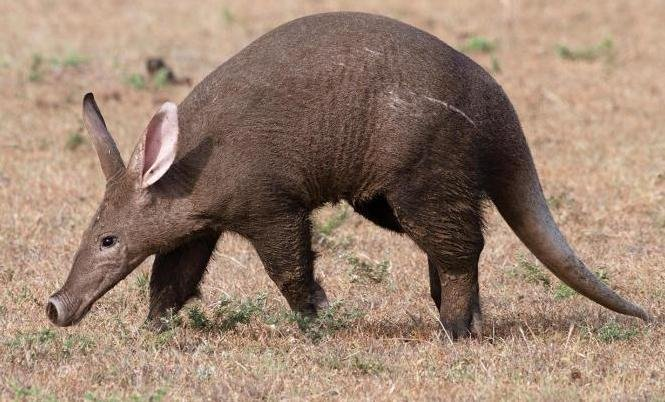
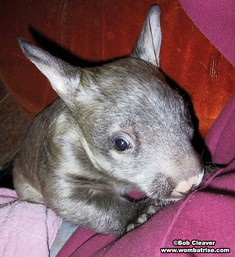
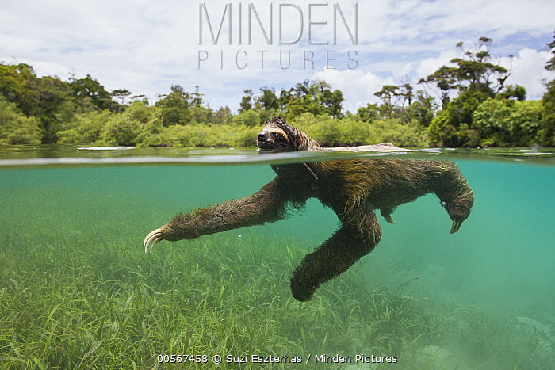
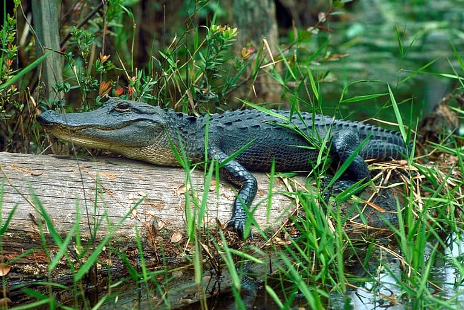

| Little Blue Penguin |

|
Eudyptula minor |
coastal regions of southern Australia and New Zealand. |
small marine animals |
they are the smallest penguin species in the world |
| Aardvark |
 |
Orycteropus afer |
sub-Saharan Africa-found in a range of habitats |
ants and termites |
aardvarks have a tongue that can extend up to 30 centimeters |
| Northern Hairy-Nosed Wombat |

|
Lasiorhinus krefftii |
Dry, Semi-Arid Woodlands & Grassy Understory |
vegetation |
Wombats poop in cubes, never spheres. |
| Pygmy Three-Toed Sloth |
 |
Bradypus pygmaeus |
Found exclusively on Escudo de Veraguas, this sloth resides in
mangrove forests.
|
Their diet consists only of leaves. |
It is one of the rarest mammals in the world. |
| American Alligator |

|
Alligator mississippiensis |
Swamps, marshes, rivers, lakes, and ponds. |
Fish, amphibeans, Reptiles and mammals. |
They have a remarkable ability to regulate their body temperature
and adapt to seasonal changes.
|